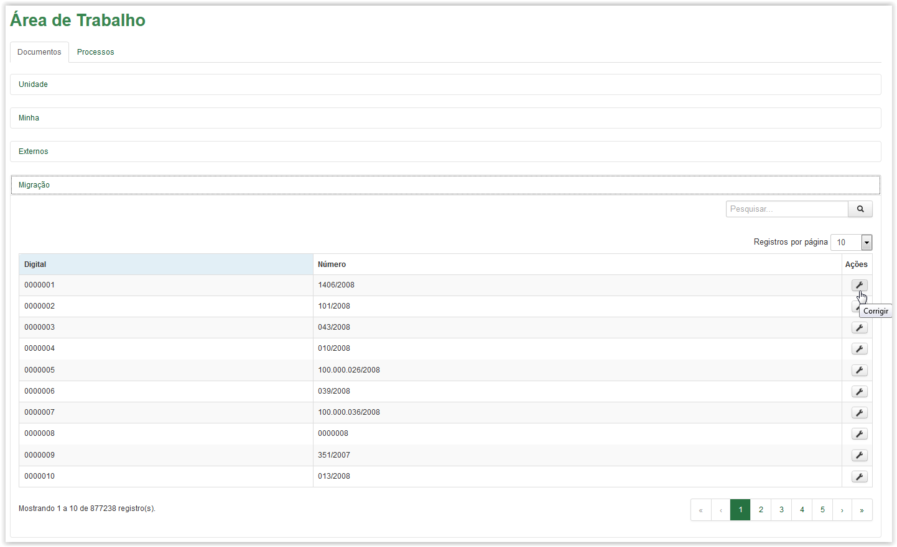
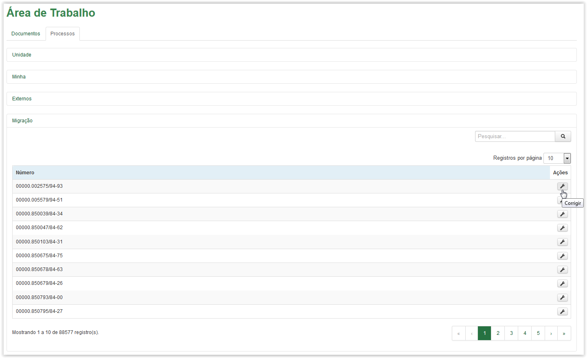
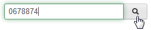
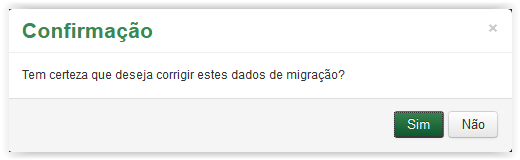
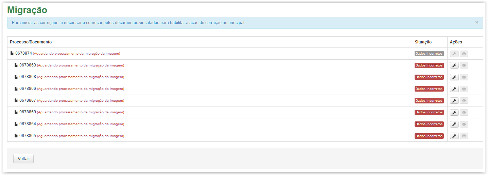
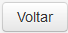

Corrigir artefatos
Para corrigir os dados de um documento ou processo, clique no ícone disponível na coluna Ações da Área de Trabalho. Esse ícone está disponível tanto na aba de Documentos quanto na aba de Processos:

Aba Documentos - Ícone Corrigir

Aba Processos - Ícone Corrigir
Utilize o campo  para pesquisar o artefato (documento ou processo).
Após clicar no ícone é apresentada uma mensagem de confirmação:

Mensagem de confirmação
Ao clicar no botão o sistema cancela a ação e retorna para a Área de Trabalho. Caso contrário, ao clicar no botão o sistema apresenta a tela Migração:

Tela Migração
Na tela Migração, o sistema indicará por meio das ações e dos status, se deve ser feita correção de dados , confirmar ou alterar a imagem  ou adicionar uma imagem ao artefato
ou adicionar uma imagem ao artefato  .
.
Após a correção de todos os dados e imagens do artefato, juntamente com os seus vínculos, o artefato não será mais exibido na tela de Migração, sendo apresentado na Área de Trabalho, aba Minha ou Arquivo, dependendo do lugar onde este artefato constava no sistema anterior.
Para sair da tela Migração, clique no botão :
Tela Migração
O sistema retornará para a Área de Trabalho.
Created with the Personal Edition of HelpNDoc: Full-featured EBook editor